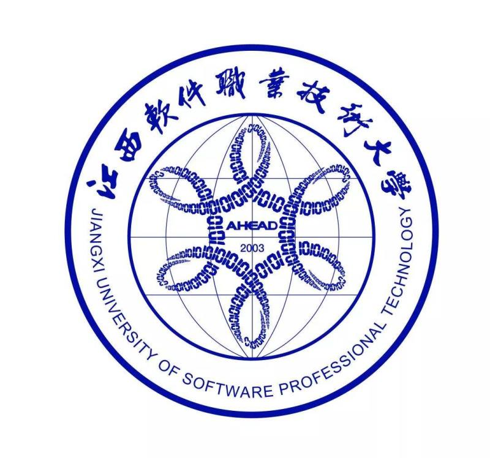

软件工程学院现有在校生2000余人。开设本科专业4个，即：软件工程、智能控制技术、计算机应用工程、大数据技术与应用；开设了专科专业5个，即：软件技术、嵌入式技术与应用、人工智能技术服务、工业机器人技术、大数据技术与应用。软件技术专业根据市场用人需求，设置了五个专业方向，即（软件技术(Web软件设计)、软件技术(移动互联网开发技术)、软件技术(网络游戏开发方向) 、软件技术(软件测试方向) 、软件技术（Ui设计）等）。 学院共有专任教师74名（不含思政部和基础教学部），其中正高职称 8 人，占总数的10.1%、副高职称13人，占总数的17.8%，中级职称24人，占总数的32.8%。具有硕士学位以上的21人，占总数的28.8%，本科以上学历的52人，占总数的70%。有江西省中青年学科带头人1名，江西省高校中青年骨干教师2名。
2020年10月24日，江西软件职业技术大学区块链活动节隆重启幕。此次区块链活动节是学习习近平总书记“10·24”讲话精神的重要活动，是先锋软件集团和江西软件大学自2015年来，在区块链领域探索出的具有纪念意义的活动，它生动地诠释了江西软件大学“学习的先锋、运动的先锋、快乐的先锋、创新的先锋”的校园文化精神。
江西软件职业技术大学现有15个校内实训室，涵盖全院40个专业。这些实训室是： IBM 实训室(无)、企业信息化实训室、校务通实训室、 LINUX 实训室、电子政务实训室、构件库实训室、嵌入式实训室、 ITS 实训室、电脑艺术实训室、网络化教学实训室、办公自动化实训室、会计电算化实训室、电子商务平台实训室、营销实训室、服务外包实训室。
学校推进“人才强校”战略，抓住引进、培养、使用、评价、管理和激励等环节，建立健全科学合理的人才工作体制和运行机制，确保学院的可持续发展。进一步调整师资结构，提升教师队伍素质，重点建设“双师型”教师队伍和在学科领域有一定知名度的高水平的学科专业带头人队伍。到 2010年，专任教师400名，其中硕士学位比例达到50% ，博士学位达到10% ，副教授或副高职称达到30% ，正教授达到 20% ， 80% 以上的专业教师成为“双师型”教师或具有双师素质。

1 、学校的办学宗旨：立足行业、面向市场，通过实施“十一工程”，培养“三好一专”（人品好、外语好、计算机好、掌握计算机方向的一门专业技能）的高质量实用型软件技术人才。 2 、学校的办学定位：以服务为宗旨，以就业为导向，坚持产学研结合，提高教学质量和办学效益；以学历教育为主，非学历教育为辅，采用全日制和非全日制相结合的教育形式；培养高质量实用型的软件技术人才，服务于江西经济社会发展和我国 IT 产业的发展。 3 、学校的第一个五年（ 2006-2010 年）发展规划：在规划期内先锋学院办学条件和办学水平的各项指标达到教育部《高职高专院校人才培养工作水平评估指标体系》中优秀等级所规定的标准。建成一所符合现代高职教育要求，全日制在校生规模达到 8000 人左右，具有良好办学条件、制度健全、管理规范、享有社会知名度、办学特色鲜明、以软件技术类专业为主体的国内示范性软件职业技术大学。 4 、学校的人才培养目标：以服务为宗旨，以就业为导向，主动适应市场，形成了以软件技术为基础，以计算机应用为特色的，工、文协调发展的专业体系，培养就业能力强，质量高的实用型软件技术人才。在教学中提倡“教的都是新的，学的都是用的”教育思想观念，以专业建设为龙头，深化教育教学改革，坚定不移地走产学研结合的道路；坚持科学发展观，学院规模、结构、质量、效益统一协调进步，快速发展；在教学模式上，坚持特色创新，网络化教学，订单式培养，公司式实习，鼓励学生自主创业，为我国社会主义经济建设服务，为江西在中部崛起培养急需的软件技术人才。